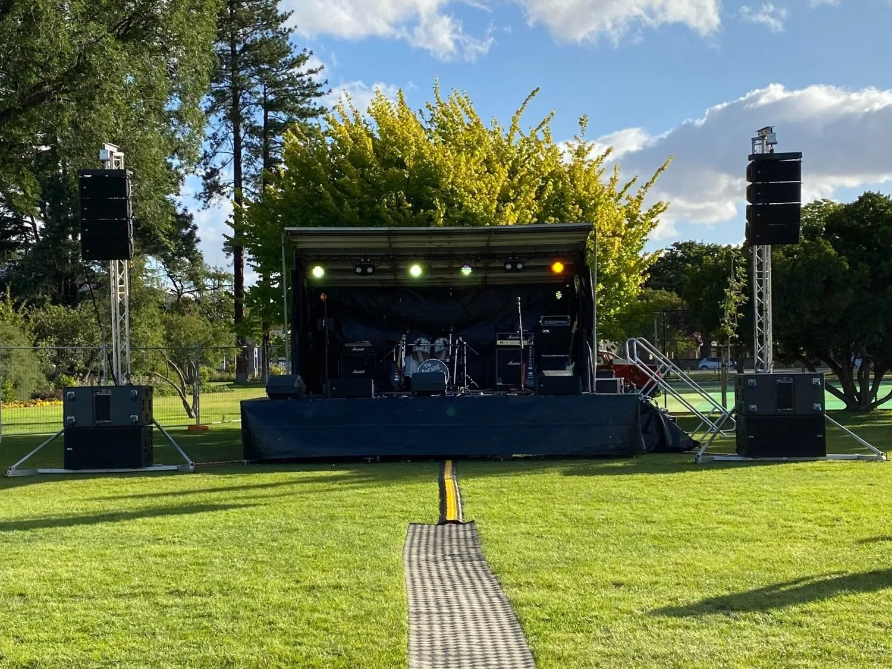
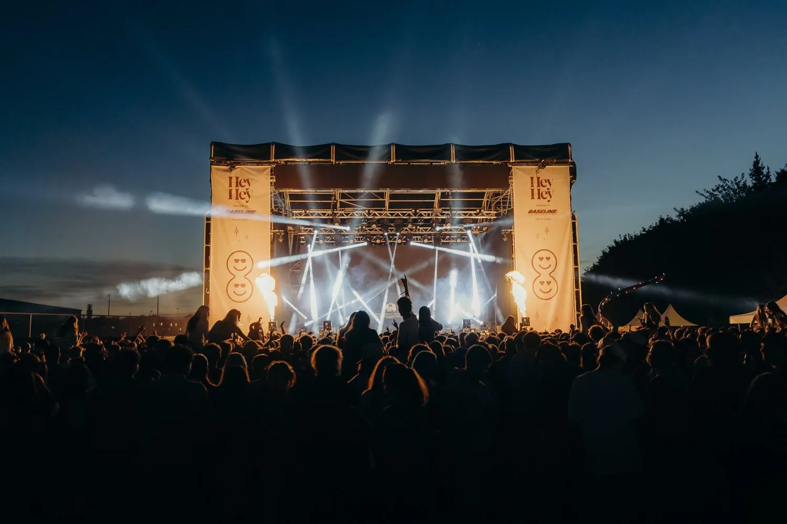

Our mobile stage trailers and modular covered truss structures are built for fast setup and full production flexibility.
They suit concerts, festivals, public events, tours, and corporate shows, and are available across the South Island.

Fast setup with a built-in hydraulic lift and a weather-resistant arched roof canopy. It can be extended with modular staging.
An elevated stage platform with a compact footprint for tighter spaces, ideal for small to mid-size crowds.
Heavy-duty aluminium truss with a weatherproof canopy and side options, for festivals, concerts, and touring shows.
A smaller covered roof for regional events, local councils, schools, and touring artists.
Flexible decks at multiple heights, adaptable to any layout. See our full staging hire page.
Combine a stage with sound, lighting, LED screens, and power under one quote.

A stage trailer is the fast option, with the stage and roof arriving together. A covered truss roof takes more building but gives you more rigging for bigger productions.
See our truss and rigging hire for what else we can build. Tell us about the site and the show, and we will point you to the right one.
Tell us the site and the show, and we'll sort the right stage.
Get in touch or call 021 178 0355.
We have a MobilArc 1000 covered trailer stage and a 5.5m x 4m stage trailer. The MobilArc can be extended with modular staging.
We have an 8m x 6m and a 6m x 4m covered truss roof, both with weatherproof canopies.
Stage trailers and covered truss roofs are available across the South Island.
All Ears Events Limited
20 Southwark Street, Sydenham, Christchurch 8023
021 178 0355 · hello@allears.nz
Mon-Fri 9am-5pm